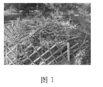
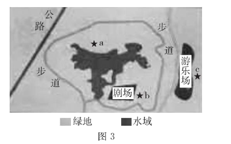

2022年北京市中考生物真题 · 科普阅读 第32题
32. 阅读科普短文，回答问题。
在北京的部分郊野公园，你会发现一些石块和枯枝落叶堆积在一起。这些石块和枯枝落叶真的是园林作业后随意丢弃或遗忘的吗？它们究竟是什么？有着什么样的作用？其实这是工作人员特意堆砌而成的本杰士堆（如图1）。

本杰士堆的搭建过程并不复杂：先选择枯木和树枝等搭建框架，然后选取石块放置在周边进行固定，最后倒入含有种子的土壤与落叶。搭建后，随着植物的生长，吸引来取食其叶片的昆虫，一些食虫鸟也会来此栖居。慢慢地，还会有小型兽类到访此处。本杰士堆中的生物多样性逐渐增加，构成了微小的生态系统，
如图2所示。

本杰士堆有生态修复型和科普教育型等类型。生态修复型的搭建地点要选择人为干扰程度低的地方，让野生动物有自由的栖息空间，加速生态系统的修复过程。科普教育型可修建在公园休憩区附近，以进行科普教育和宣传，提高人们的环保意识。
本杰士堆搭建的意义是用小生态的构建促进大环境的改善，实现“以生态的办法解决生态问题”。“十四五”期间，北京市园林绿化局将结合新一轮百万亩造林绿化工程，在森林和郊野公园中搭建更多的本杰士堆，这将推进首都生态环境的改善。
（1）本杰士堆中的所有生物和_______构成了生态系统。其中的植物可为动物提供食物，在生态系统成分中属于______。根据文中信息写出一条含有食虫鸟的食物链：___________________________。
（2）下列关于本杰士堆 叙述正确的是 （多选）。
叙述正确的是 （多选）。
A. 动物会取食植物，对生态系统只有负面作用
B. 微生物能够分解动物粪便，促进物质循环
C. 其中的各种生物相互联系，相互影响
（3）有关部门组织搭建本杰士堆志愿活动，图3中适宜搭建生态修复型本杰士堆的地点为______（填字母）。

（4）如果有机会参与搭建本杰士堆的活动，你希望搭建的类型及理由是__________________。